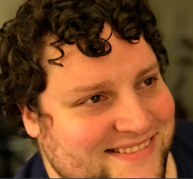
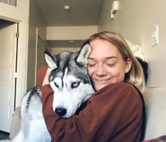
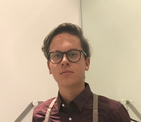
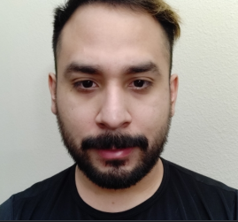
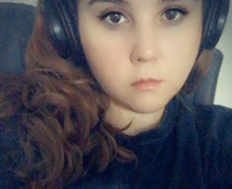

Who is Water My Plants for?
- Anyone with plants!
- Anyone that is forgetful!
- Perfect for housesitters!
Meet the Team that made it all possible
Tim Jeffries
Tim is a waterproof supercomputer who lives in the Chum Bucket laboratory. He is Plankton's wife and sidekick who supplies him with evil plans to steal the Krabby Patty formula. Along with Plankton, He is one of the two main villains. As a computer, Tim is the smartest resident of Bikini Bottom and has a clever, analytical personality. He has two main forms: a big monitor on the wall or a portable wheeled computer. Along with his role as co-owner of the Chum Bucket, He works as the chef and cashier. He rarely has to fulfill these jobs due to the restaurant's unpopularity.
Grace Elton
Gracie is SpongeBob's teacher at Boating School, where she teaches students how to drive boats like underwater cars. She is a paranoid pufferfish who wears a sailor uniform. Teaching and driving are her passions in life. She is talented at both, having successfully taught every student other than SpongeBob how to drive. She and SpongeBob are always on an "endless quest" to get him a driver's license, but due to his reckless boating skills, they never succeed. Her boating school is the only one in the ocean and is very popular. Gracies's school is attached to a submerged lighthouse and surrounded by a stunt-driving course.
Danny Hoesle
Danny is a joyful sea sponge who lives in a pineapple with his pet snail Gary in the underwater city of Bikini Bottom. He works as a fry cook at the Krusty Krab, a job which he is exceptionally skilled at and enjoys a lot. He attends Mrs. Puff's Boating School, and his greatest dream in life is to receive his boating license. Unfortunately, he tenses up whenever he has to drive a boatmobile, and he drives recklessly. SpongeBob is very good-natured and loves to hang out with his best friend Patrick. His teacher is Mrs. Puff and his boss is Mr. Krabs.
Jorge Acevedo
Jorge is SpongeBob SquarePants's pet sea snail and the most seen pet in the series. He lives with SpongeBob in his pineapple house on 124 Conch Street. Gary is voiced by Tom Kenny and first appears in the pilot episode, "Help Wanted." He is a domesticated house pet with similar mannerisms to a cat, most notably his "meow" sound, as snails are the underwater equivalent to cats in the show. It has been suggested that SpongeBob has had Gary ever since he was a young boy. The episode "Treats!" reveals that Gary was adopted by SpongeBob. In "Plankton's Pet" SpongeBob reveals to have bought Gary at the animal shelter.
Ed Estrada
Ed more commonly known as Plankton. He is a planktonic copepod who runs the Chum Bucket restaurant alongside Karen, a waterproof computer who is his sidekick and wife. The Chum Bucket is highly unpopular in Bikini Bottom because it serves chum, a type of bait made from fish meat. Both Plankton and Karen are the two main villains of the franchise. Plankton despises his rival, Mr. Krabs, for running a successful restaurant because his own business rarely gets any customers. He is incredibly jealous of Mr. Krabs and his success. His main goal is to steal Krabs' secret formula for Krabby Patties and running Mr. Krabs out of business. Karen gives him a variety of evil plans to steal it, but their efforts always end up failing in the process.
Melissa C
Melissa is a squirrel from the surface who wears a diving suit and lives in an air-filled glass treedome to survive underwater. Melissa is a thrill seeker who loves extreme sports and karate. Having come from the state of Texas, she has a Southern drawl and a love for rodeos. She works as a scientist and built both her treedome and air suit herself. She is also a member of the Gal Pals along with Karen, Mrs. Puff, and Pearl.